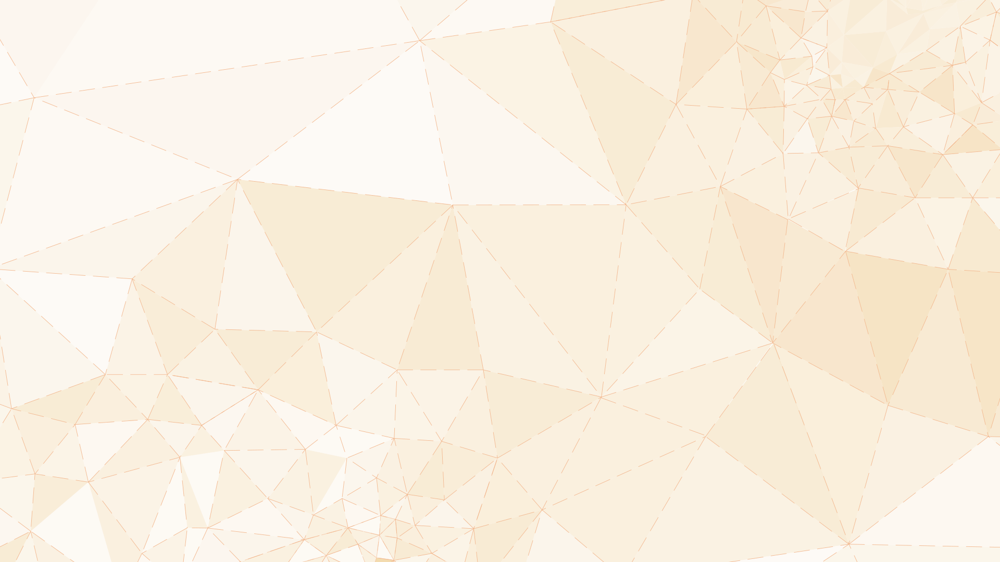

<audio src="audios/FUNDO/desenhando_com_papel.mp3" autoplay loop><p>Seu nevegador não suporta o elemento audio.</p></audio><div class="mute"></div>
<iframe src="https://www.youtube.com/embed/Z1XfjpntVBg?version=3&autoplay=1&controls=0&loop=1&rel=0&showinfo=0&modestbranding=1&playlist=Z1XfjpntVBg" frameborder="0" allow="autoplay; encrypted-media" allowfullscreen></iframe>

<a href="#b_" class="close"></a>
<svg class="layer default_nav" version="1.1" id="Layer_1" xmlns="http://www.w3.org/2000/svg" xmlns:xlink="http://www.w3.org/1999/xlink" x="0px" y="0px"
   viewBox="0 0 1920 1080" style="enable-background:new 0 0 1920 1080;" xml:space="preserve">
    <a xlink:href="#v_dancando_o_desenho"><polygon class="st6" points="456.1,344.7 805.8,78.1 869.4,393.9 "/><text transform="matrix(0.983 0 0 1 596.4485 306.515)">DANÇANDO O DESENHO</text></a>
    <a xlink:href="#v_vidas_secas"><polygon class="st0" points="252.5,540.5 321.6,719.8 412.7,632.7 "/><text transform="matrix(0.983 0 0 1 317.9186 631.5219)"><tspan x="0" y="0">VIDAS</tspan><tspan x="-1.7" y="18.4">SECAS</tspan></text></a>
    <a xlink:href="#v_desenho_moldado"><polygon class="st8" points="1154.2,764.4 928,710.8 955.1,880.3 "/><text transform="matrix(0.983 0 0 1 966.7673 782.5245)"><tspan x="0" y="0">DESENHO</tspan><tspan x="-1.6" y="18.4">MOLDADO</tspan></text></a>
</svg>
